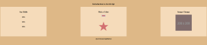
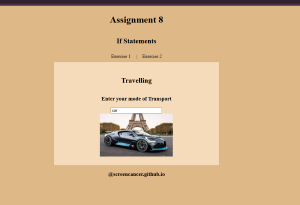
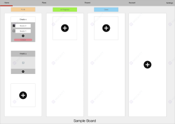
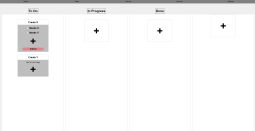
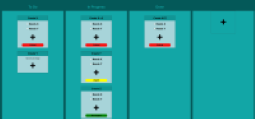

Matthew Johnson
CSCE 242: Client-Server Computing
Learning html, css, and js for web applications
Assignments
Basic HTML

Basic HTML website with tables, anchors, lists, and various text types.
Basic CSS
Creating a webpage on a topic of choice using new html like nav. Then using CSS to style it and format it.
Page Layout

Recreating a specified layout with flexbox.
Recreation of page
Recreating a specified layout with flexbox and css
JavaScript practice
Practicing with basic css, html, and js.
Conditional Statements
More practice with basic css, html, and js.
Projects
Topic PDF
A topic PDF showing the basic requirements and plans for the project.
Wireframe
A wireframe plan of the project.
Basic Project Pages
A basic html/css version
CSS and Basic JS
Added CSS styling